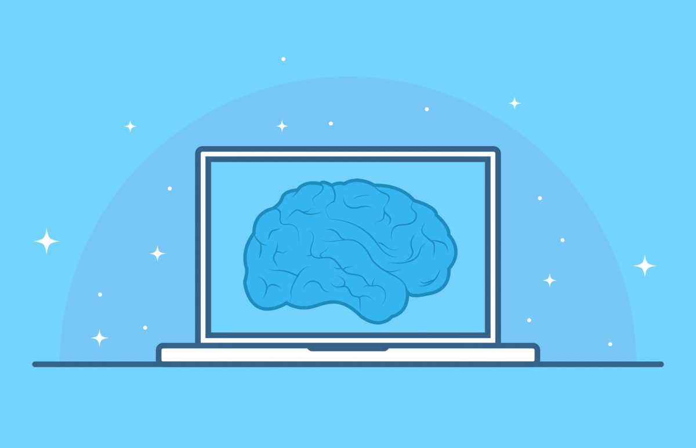

AI: Our New Companions?

Image Source
In recent years there has been lots of discussion and concern around “the robots taking over” and the increasing automation of jobs. Movies and other types of media and storytelling have explored the concept and fear of artificial intelligence becoming sentient. So, have you ever wondered what life would be like if AI started replacing humans? Here I will explore some of the current implementations of AI in our daily lives, the pros and cons, some surprising or unintended consequences, and my thoughts on the matter.